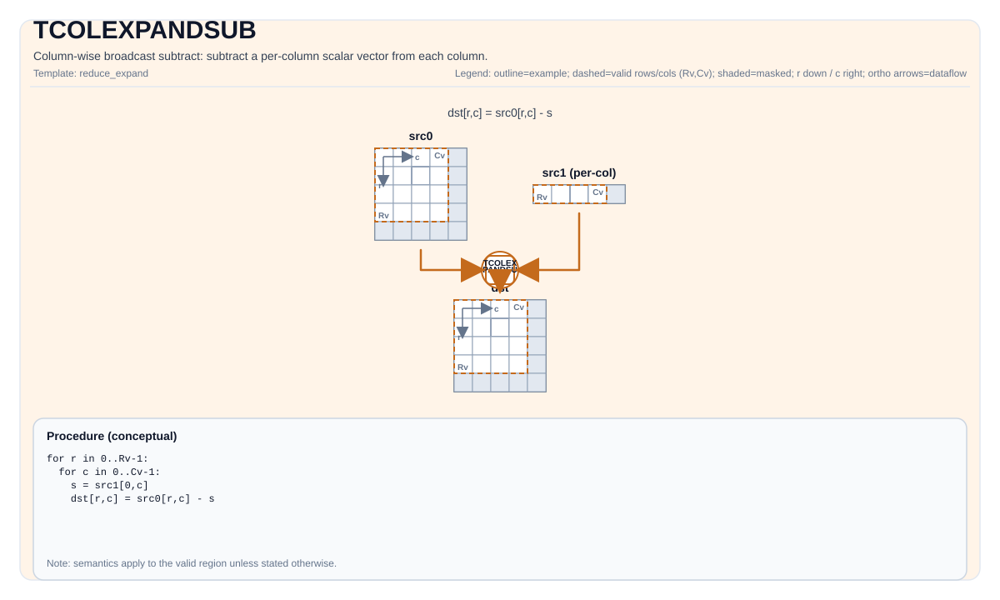

TCOLEXPANDSUB¶
Tile Operation Diagram¶

Introduction¶
Column-wise broadcast subtract: subtract a per-column scalar vector src1 from src0.
Math Interpretation¶
Let R = dst.GetValidRow() and C = dst.GetValidCol(). Let s_j be the per-column scalar taken from src1 (one value per column).
For 0 <= i < R and 0 <= j < C:
\[
\mathrm{dst}_{i,j} = \mathrm{src0}_{i,j} - s_j
\]
Assembly Syntax¶
PTO-AS form: see PTO-AS Specification.
Synchronous form:
%dst = tcolexpandsub %src0, %src1 : !pto.tile<...>, !pto.tile<...> -> !pto.tile<...>
AS Level 1 (SSA)¶
%dst = pto.tcolexpandsub %src0, %src1 : !pto.tile<...>, !pto.tile<...> -> !pto.tile<...>
AS Level 2 (DPS)¶
pto.tcolexpandsub ins(%src0, %src1 : !pto.tile_buf<...>, !pto.tile_buf<...>) outs(%dst : !pto.tile_buf<...>)
IR Level 1 (SSA)¶
%dst = pto.tcolexpandsub %src0, %src1 : !pto.tile<...>, !pto.tile<...> -> !pto.tile<...>
IR Level 2 (DPS)¶
pto.tcolexpandsub ins(%src0, %src1 : !pto.tile_buf<...>, !pto.tile_buf<...>) outs(%dst : !pto.tile_buf<...>)
C++ Intrinsic¶
Declared in include/pto/common/pto_instr.hpp:
template <typename TileDataDst, typename TileDataSrc1, typename... WaitEvents>
PTO_INST RecordEvent TCOLEXPANDSUB(TileDataDst &dst, TileDataDst &src0, TileDataSrc1 &src1, WaitEvents &... events);
Constraints¶
TileDataDst::DType,TileDataSrc1::DTypemust be one of:half,float.- Tile shape/layout constraint (compile-time):
TileDataDst::isRowMajor. src1is expected to provide one scalar per column (i.e., its valid shape must coverCvalues).- Exact layout/fractal constraints are target-specific; see backend headers under
include/pto/npu/*/TColExpand*.hpp.
Examples¶
See related examples in docs/isa/ and docs/coding/tutorials/.
ASM Form Examples¶
Auto Mode¶
# Auto mode: compiler/runtime-managed placement and scheduling.
%dst = pto.tcolexpandsub %src0, %src1 : !pto.tile<...>, !pto.tile<...> -> !pto.tile<...>
Manual Mode¶
# Manual mode: bind resources explicitly before issuing the instruction.
# Optional for tile operands:
# pto.tassign %arg0, @tile(0x1000)
# pto.tassign %arg1, @tile(0x2000)
%dst = pto.tcolexpandsub %src0, %src1 : !pto.tile<...>, !pto.tile<...> -> !pto.tile<...>
PTO Assembly Form¶
%dst = tcolexpandsub %src0, %src1 : !pto.tile<...>, !pto.tile<...> -> !pto.tile<...>
# AS Level 2 (DPS)
pto.tcolexpandsub ins(%src0, %src1 : !pto.tile_buf<...>, !pto.tile_buf<...>) outs(%dst : !pto.tile_buf<...>)